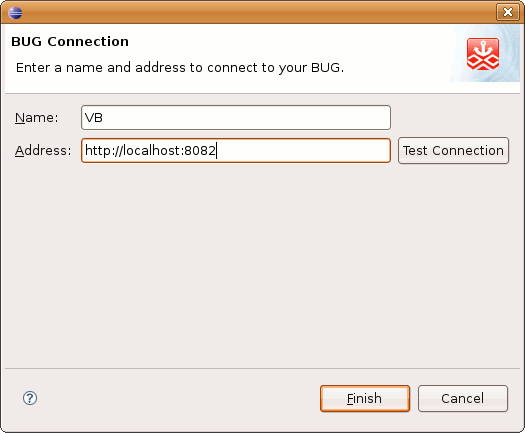
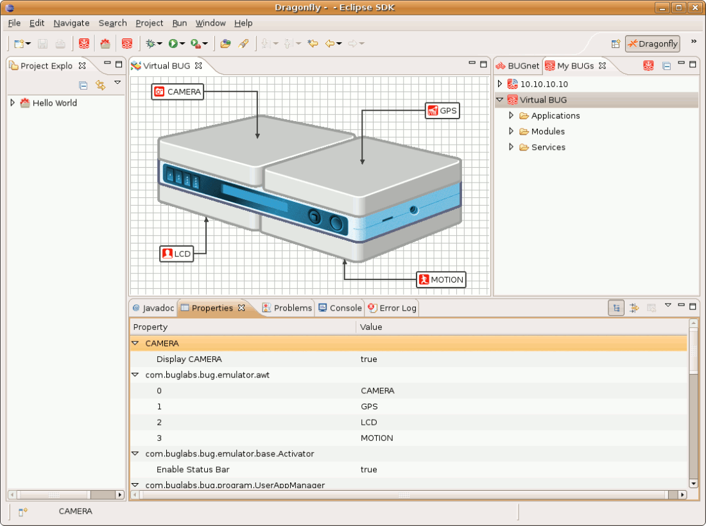

Interacting with the My BUGs view
The My BUGs view displays any BUG connections that are available to the SDK and allows you to interact with them.
There are 3 connection types you will see in this window:
 Virtual BUG Connection.
Virtual BUG Connection.- Static Connection (Manual).
- SLP BUG Connection (Physical BUG).
You can:
- click the New BUG Connection button to manually create a BUG connection. This button is available via the Toolbar, My BUGs view title bar, and by right clicking in the My BUGs view.
- expand the node on a BUG Connection to bring up a Physical Editor window for the connection (Note: Selecting the BUGbase in the Physical Editor or double clicking the BUG connection after expanding will enable the Applications by Module section in the BUGnet view).
- browse any BUG connection's Applications, Modules, or Services nodes.
- right click a BUG Connection to bring up a menu (see Right Click Menu for details).
- right click on an Application in the BUG connection Applications folder (see Right Click Menu for details).
If you accidently close this view you can go to "Window > Show View > Other > Dragonfly > My BUGs" to display again.
BUG Connection
When the Virtual BUG is launched it will automatically appear in the My BUGs view. The same should happen for a Physical BUG when it is connected to your computer via USB or connected to your Network. (If you are having trouble please see http://buglabs.net/start).
Creating a New BUG connection
In some cases it may be necessary to create a BUG connection manually.
- Clicking on a New BUG connection button will bring up a wizard:

- After you enter a Name and Address the Test Connection and Finish button will become active (the following screen uses the Virtual BUG address):

- Click Test Connection to validate the connection or click Finish add it to the My BUGs view.
Right Click on BUG Connection Menu
- New BUG Connection button - Opens New BUG Connection Wizard
- Delete BUG Connection button - Only active for Manually created Connections
 Refresh BUG Connection button
Refresh BUG Connection button - Properties - Update BUG Connection Address
- Addition Menu options when right clicking on an Application in the Application folder.
 Remove application button
Remove application button- Import into Dragonfly SDK button
Physical Editor Window
Expanding the node on a BUG connection opens a Physical Editor for the BUG Connection:

When you click on the BUGbase or any Module in the Physical Editor it will be highlighted in blue and the Properties view will populate with specific information for the component (Note: Selecting the BUGbase in the Physical Editor will enable the Applications by Module section in the BUGnet view).

Some of these properties can be changed. For example on the BUGbase you can enable/disable Services.